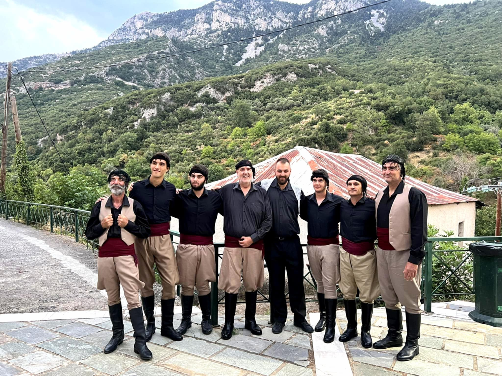
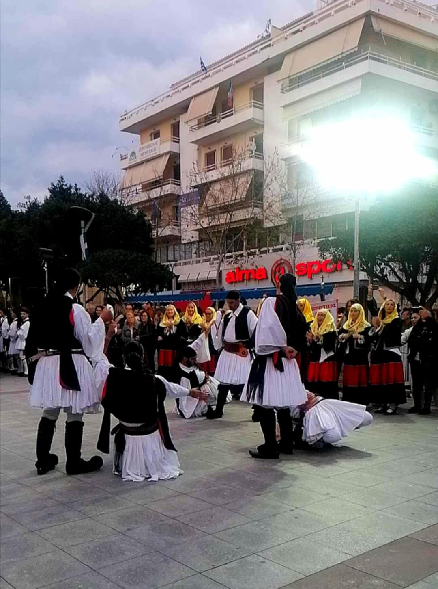
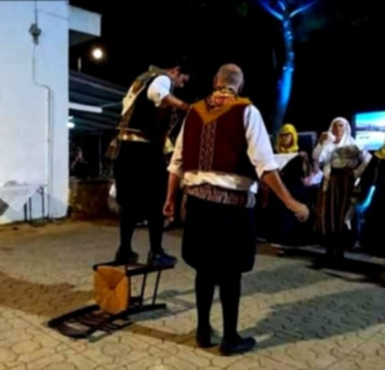
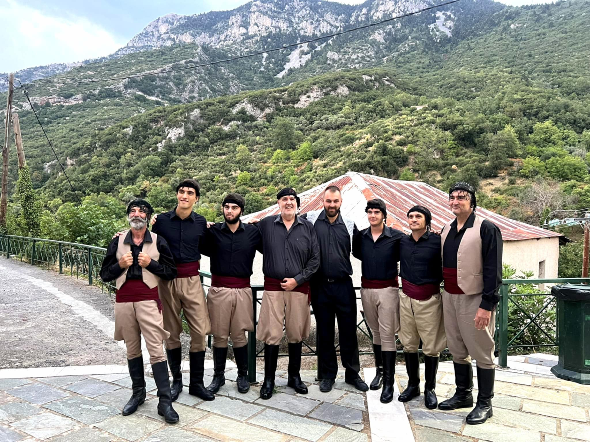
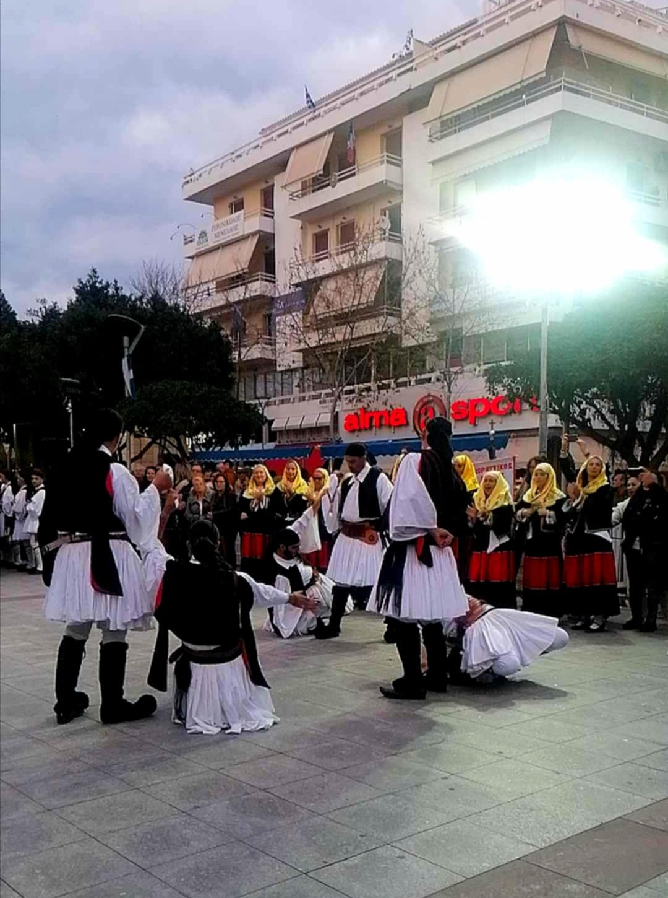
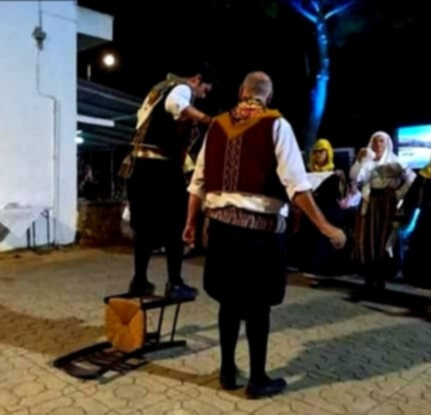
 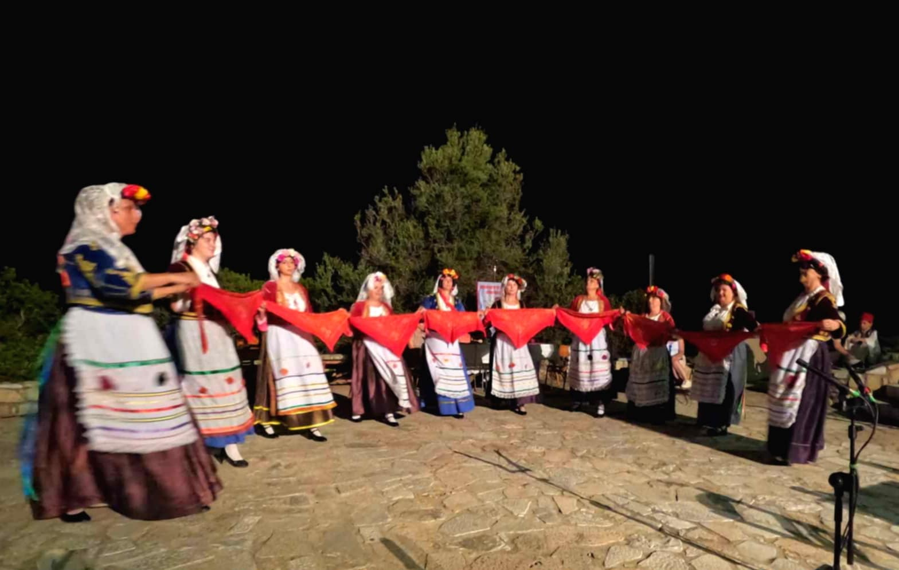
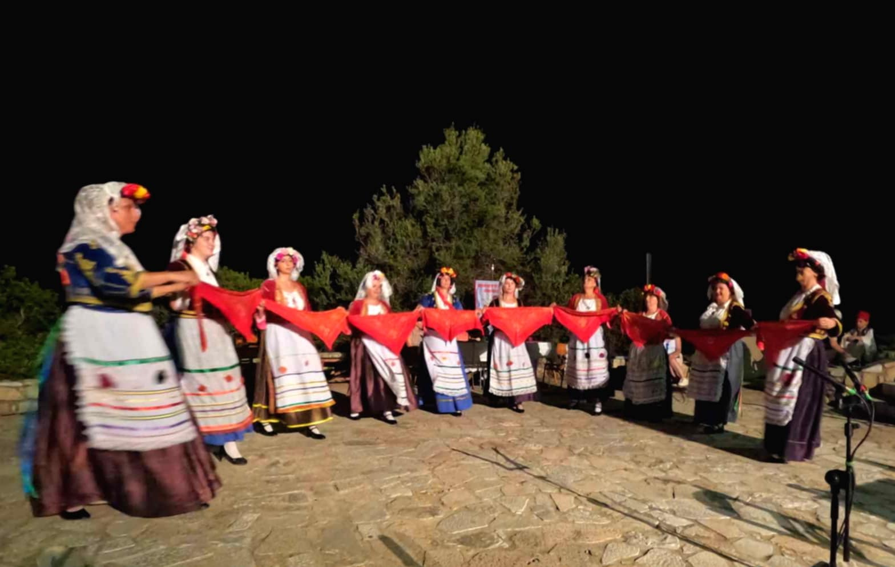


Ο σύλλογός μας μετέχει σε πολλά φεστιβάλ παραδοσιακών χορών στην Ελλάδα αλλά και στο εξωτερικό. Κάθε χρόνο έχει ένα πλούσιο πρόγραμμα εκδηλώσεων, ενώ παράλληλα έχει λάβει μέρος σε πολλές τηλεοπτικές εκπομπές τοπικής και πανελλήνιας εμβέλειας, οι οποίες έχουν ως σκοπό την προβολή και την ανάδειξη της παραδοσιακής μουσικοχορευτικής μας κληρονομιάς.
Συχνά οργανώνει εκδρομές, συνεστιάσεις και μετέχει σε πολιτιστικά δρώμενα των δήμων Καλαμάτας και δυτικής Μάνης, όπου και δραστηριοποιείται. Παράλληλα, ο σύλλογος έχει να αναδείξει παραστάσεις από την ερασιτεχνική του θεατρική ομάδα και τη χορωδία παραδοσιακής μουσικής.
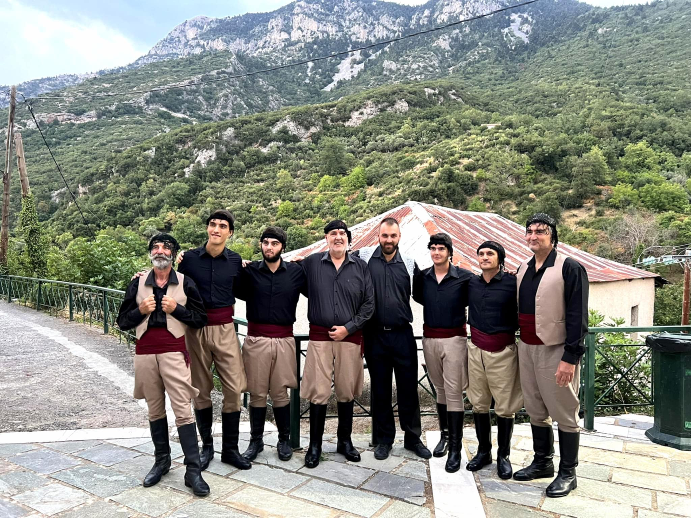
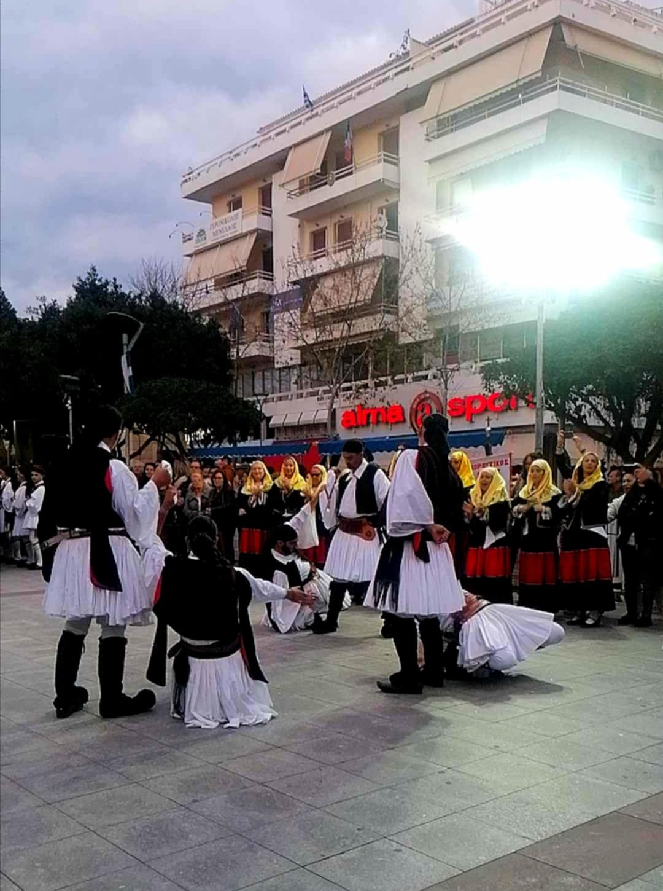
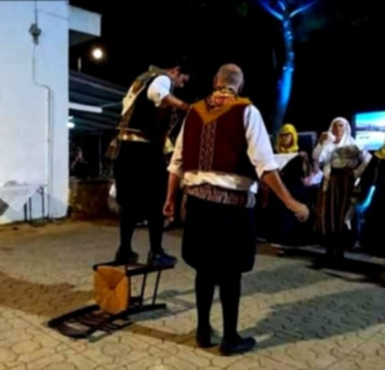
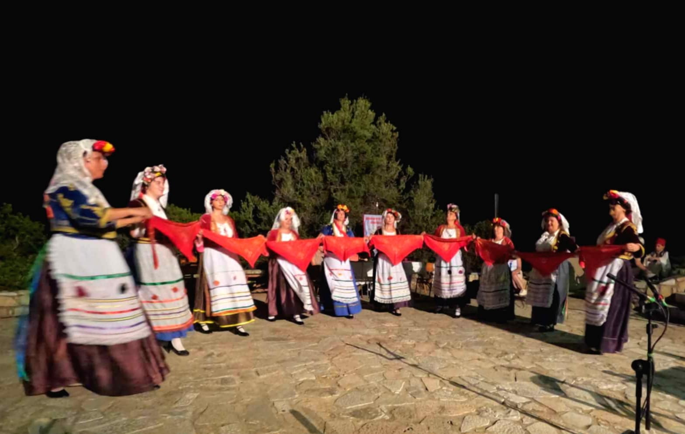